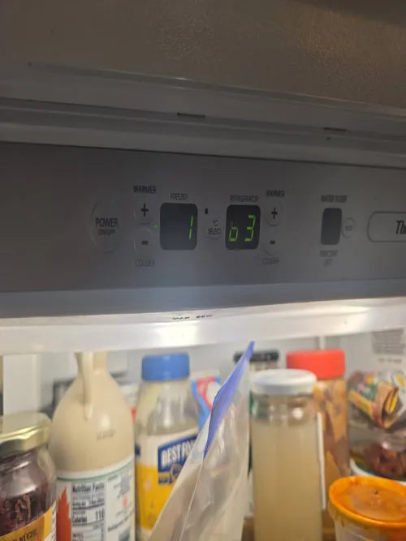

LG Refrigerator Repair: Why Your Refrigerator Is Leaking Water on the Floor
Finding water on the kitchen floor near your refrigerator can be frustrating and concerning. At first, many homeowners assume someone spilled a drink or that condensation is temporarily collecting beneath the appliance. However, recurring puddles often indicate an underlying refrigerator problem that should not be ignored. Water leaks can damage flooring, cabinetry, baseboards, and nearby materials if left unresolved. Understanding the most common causes of refrigerator leaks can help homeowners identify warning signs early and determine when professional LG refrigerator repair may be necessary.
Modern LG refrigerators contain several systems that handle water during normal operation. Ice makers, water dispensers, defrost systems, drain lines, water valves, and cooling components all rely on proper water management. When one of these systems malfunctions, water can escape from its intended path and eventually appear on the floor around the refrigerator.
One of the most common causes of water leaks is a clogged defrost drain. During normal operation, frost naturally forms on cooling components and is periodically removed during automatic defrost cycles. The resulting water flows through a drain tube and exits safely beneath the appliance. Over time, food particles, mineral deposits, ice, or debris can block the drain opening. When this occurs, water backs up and may eventually leak onto the kitchen floor.

Frozen drain lines can create similar symptoms. If water inside the drain system freezes, normal drainage becomes impossible. During future defrost cycles, water accumulates inside the refrigerator and eventually finds alternative paths that may lead to visible puddles beneath the appliance. Professional LG refrigerator repair often includes inspecting drain systems for both blockages and freezing conditions.
Water supply line problems are another frequent source of leaks. Refrigerators equipped with ice makers and water dispensers rely on pressurized water connections. Loose fittings, damaged tubing, worn connections, or cracked supply lines can allow water to escape slowly over time. Because these leaks often develop gradually, homeowners may not notice the problem until significant moisture appears on the floor.
A faulty water inlet valve may also be responsible. The inlet valve controls water flow into the refrigerator’s ice maker and dispensing systems. If the valve fails to close properly or develops internal damage, excess water may enter the appliance and eventually leak onto surrounding surfaces. In some situations, homeowners may also notice reduced ice maker performance or unusual water dispenser behavior.
Ice maker related problems frequently contribute to water leaks as well. Modern ice makers depend on precise water delivery and temperature regulation. If the ice maker overfills, develops internal cracks, or experiences control system issues, water may spill into areas not designed to handle excess moisture. Professional LG refrigerator repair helps identify whether the leak originates from the ice maker assembly itself or from supporting components.
Damaged door gaskets can indirectly contribute to water accumulation around the refrigerator. Worn or loose door seals allow warm, humid air to enter the appliance. This moisture can condense on cold surfaces and eventually contribute to water accumulation inside the refrigerator. Over time, excess condensation may find its way onto the floor and create recurring puddles.
Improper refrigerator leveling is another possible cause. Refrigerators are designed to direct water toward specific drainage channels. If the appliance sits unevenly, water may not flow correctly and can collect in unintended locations. While leveling problems are usually easy to correct, they should still be addressed to prevent ongoing moisture issues.
Excessive frost buildup may also lead to floor leaks. Frost accumulation often develops when defrost systems, airflow components, or door seals are not functioning properly. As frost melts during partial defrost cycles, the resulting water can overwhelm drainage systems and eventually leak from the appliance. In these situations, the visible puddle is often a symptom of a larger refrigerator issue.
Many homeowners attempt to solve water leaks by repeatedly cleaning up the puddle without investigating the source. Unfortunately, recurring leaks rarely disappear on their own. In many cases, small leaks gradually worsen over time and increase the risk of water damage throughout the kitchen.
Professional LG refrigerator repair focuses on identifying the root cause of the leak rather than simply addressing the visible water. Technicians inspect drain systems, water lines, valves, ice maker components, door gaskets, cooling systems, and electronic controls to determine exactly why moisture is escaping from the appliance.
If your refrigerator is leaking water onto the floor, early diagnosis can help prevent additional damage while restoring reliable operation. Understanding the most common causes of refrigerator leaks allows homeowners to act quickly, protect their kitchen, and maintain long term refrigerator performance.